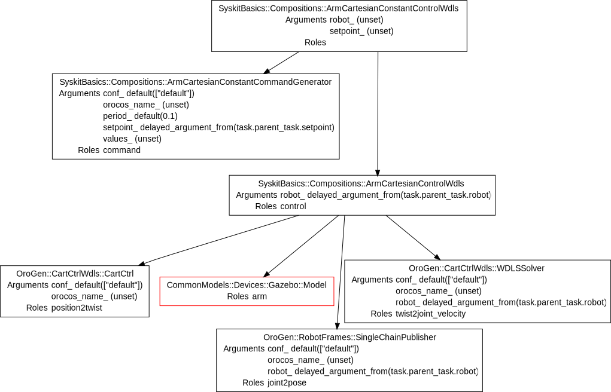
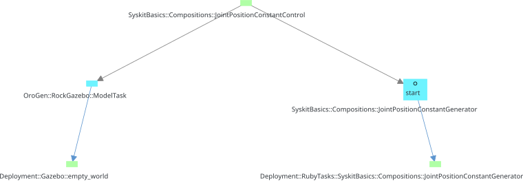

Task Structures
Key to the scheduler and garbage collection mechanisms is Syskit's ability to maintain the set of components that are useful for the currently active jobs.
Internally, Syskit maintains a set of directed graphs that represent the relationship between the components. These graphs are built so that the target of an edge is "useful" to the source of the edge. Obviously, this "usefulness" relationship is transitive, that is the target-of-a-target is useful to the root.
In addition to representing a notion of usefulness, these relations also generally encode temporal relationships between the tasks. This page will hint at these, but we will see it later on when we talk about exceptions.
Dependency Graph
We've actually already seen one of these graphs: the dependency graph is what binds compositions to the composition children. The tree structure we can see in the IDE when displaying information about a composition is a representation of this graph. The composition child (target in the edge) is useful to the parent (the source):

An edge in this graph encodes that the child must be "running" for its parent to function nominally.
Note that the dependency graph is not necessarily a tree. A task can be shared among multiple functions, that is have multiple parents.
Execution Agents
The other graph that is of importance for us right now is the execution agent graph. It represents a "execution support" relationship between a component - the one that is being executed - and the process that is actually executing it - the agent.
The composition is therefore the source and its child the target. The agent is
the target. In Syskit, this is used to represent the link between a component
and the process that is actually "containing" it, such as Gazebo for our
ModelTask, or the deployment of an orogen component. The two Deployment::
tasks below are the agents for the corresponding components:

The agent relationship is a lot stronger than the dependency relation. When a child in a dependency relation stops, the function can be recovered by e.g. simply restarting the child. If a component's agent dies, the component is already dead. This is unrecoverable.
Planning Tasks
Jobs, when added to the system, are abstract. They represent the intent to deploy a certain component network, but the computation required to deploy the network has not yet been done. The jobs are related to another task that represents the process of computing the network through the Planning relation. This allows Syskit to represent error cases where the network cannot be computed (as e.g. the case we saw at the end of the introduction.
Syskit-related planning is handled by InstanceRequirementTask:
Jobs, Permanent Tasks and Usefulness
We've already seen the jobs. Internally, Syskit simply remembers that a certain set of components are jobs. The garbage collection algorithm then determines what tasks are not useful by following the task structure.
Because it is more optimal sometimes to keep some tasks alive, even though these tasks are not useful to the jobs, Syskit also maintains a set of permanent tasks. Once the cartesian control is started, its deployment keeps on running even if the job is stopped. Because of the high cost of starting a whole process, and of configuring a component, Syskit marks the deployments as permanent. If one of them was to be killed, this would not affect the rest of the system, and it would be restarted when needed.